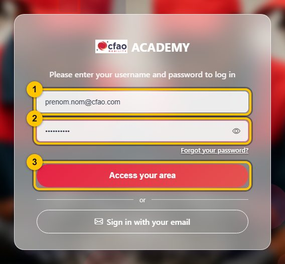
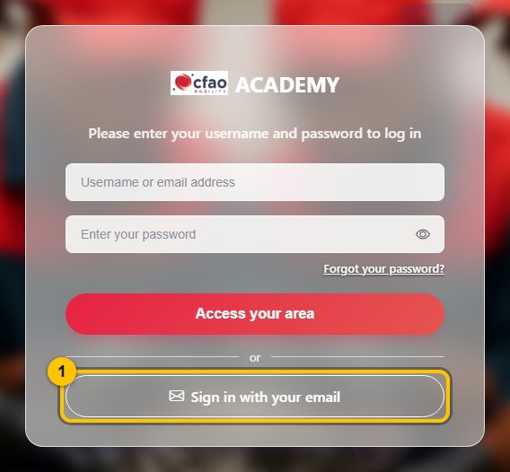
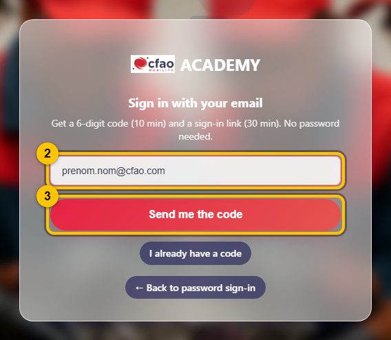
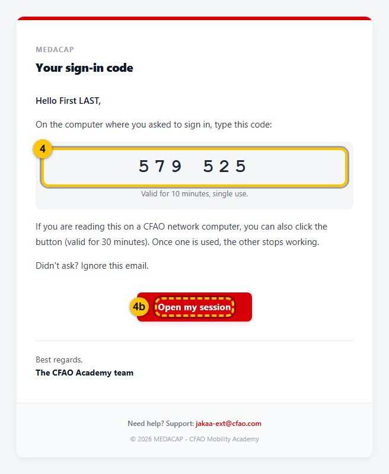
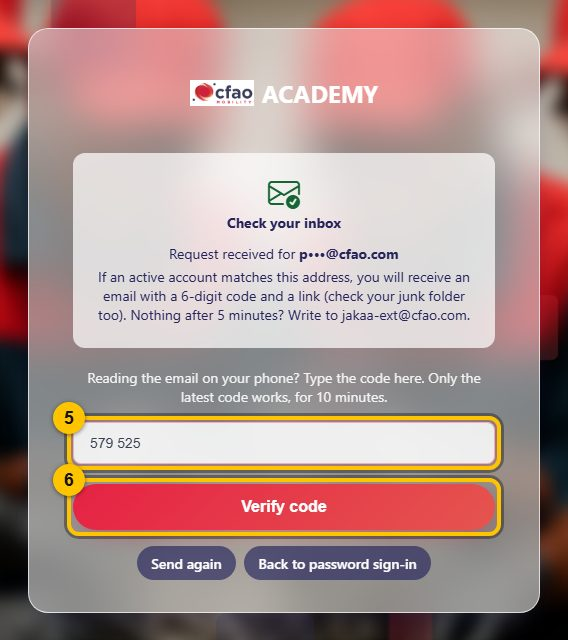

Sign in to MEDACAP
Address to open from a CFAO network computer:
http://10.68.0.15:8010/
Do you know your MEDACAP password?
Path A — with my password
1 Type your @cfao.com email address 2 Type your password 3 Click “Access your area”

✅ You are signed in
Password refused? Take path B.
Path B — no password, with a code sent by email
The “Forgot your password?” link leads to the same place: follow this path.
1 Click “Sign in with your email”, at the bottom of the screen

A new screen opens
2 Type your @cfao.com email address 3 Click “Send me the code”

Do not close this page. Open Outlook.
4 Open the email “MEDACAP - Your sign-in code” and read the 6-digit code. No email? Check your Junk Email folder.

4b Shortcut: if you read this email on your CFAO computer, just click “Open my session”. You are done, you are signed in.
Go back to the MEDACAP page you left open
5 Type the code 6 Click “Verify code”

✅ You are signed in
Not working?
- No email after 5 minutes (Junk Email included): write to jakaa-ext@cfao.com.
- “Incorrect or expired code”: a code lasts 10 minutes and only the latest one works. Click “Send again” and use the new email.
- The page does not open: you must be on a CFAO network computer.